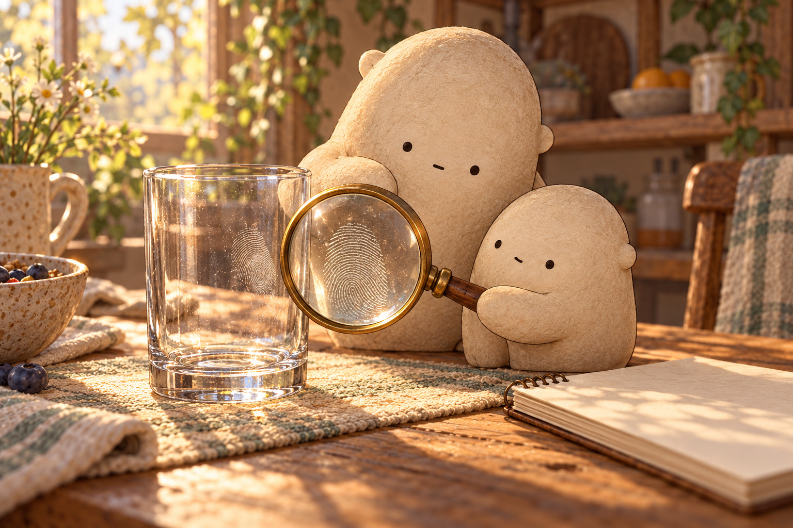
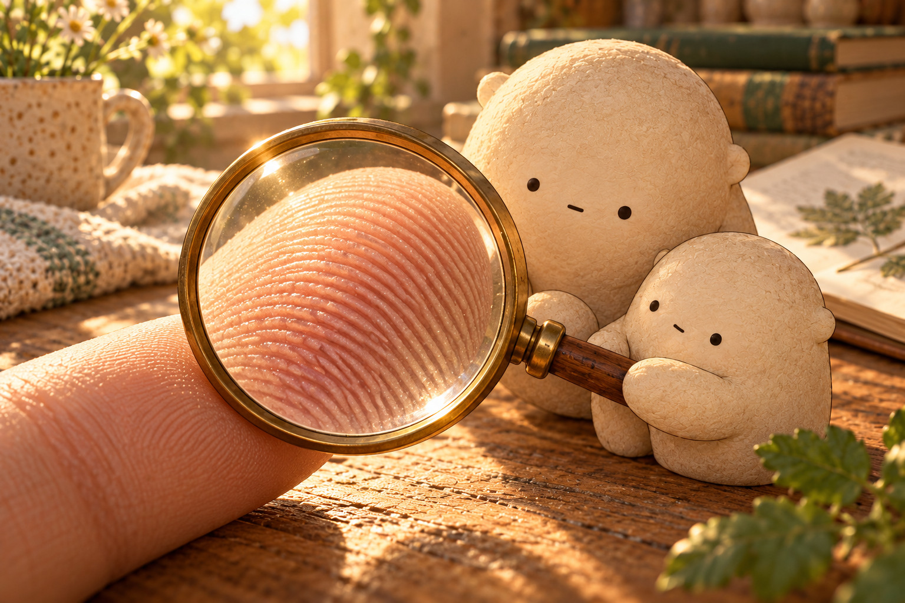

The map on a fingertip
Fingerprints

Morning light crossed the table, and a faint swirl appeared on a drinking glass. Little Wonderer tilted the magnifier. The mark was not one solid smudge. It held many curved lines. Big wondered aloud, “What part of a fingertip could leave a map like that?”

A close look at a fingertip revealed raised lines with lower spaces between them. The raised lines were friction ridges; the lower spaces were grooves. Only the ridge tops had touched the glass, leaving a flat impression of the fingertip's textured surface.

Big placed three field cards on the table. One pattern curved back toward the side: a loop. One circled a center: a whorl. One rose like a hill and crossed the card: an arch. These families described the broad flow, but they did not tell the whole story.
- fingerprint
- an impression that shows the friction ridges of a fingertip
- friction ridge
- one raised line on the skin of a fingertip
- groove
- a lower space between two raised ridges
- impression
- a mark made when one surface presses another
- loop
- a ridge flow that curves back toward the side it came from
- whorl
- a ridge flow that circles around a center
- arch
- a ridge flow that rises and crosses from side to side
- ridge ending
- a place where one ridge stops
- bifurcation
- a place where one ridge splits into two paths
- clarity
- how clearly the details can be seen